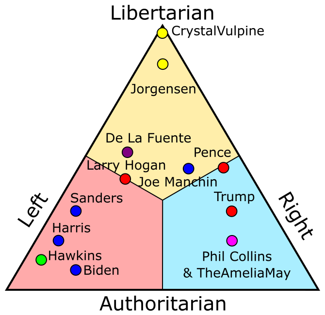

USA 2020 Presidential Election

This is a rough analysis of the positions of candidates for the 2020 presidential election in the USA. Additionally, we put Joe Manchin and Larry Hogan on there, to show where Conservative Democrats and Liberal Republicans go, respectively. Project contributors also get to have their scores on the diagram. (trigram?)
You can see how this is less confusing and more useful than the original political compass: